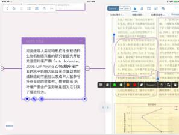
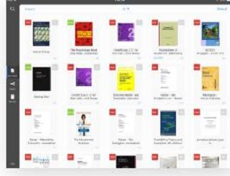
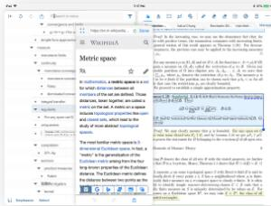

OCR Reading mode: Document vs Study Embedded Research Browser
  
The excerpt card can be automatically Corresponding to two reading Study keywords and easily drag and
or manually OCR to text form for easy scenarios: document reading and drop notes, Support Wikipedia, Google,
searching and further editing topic reading Translator, etc